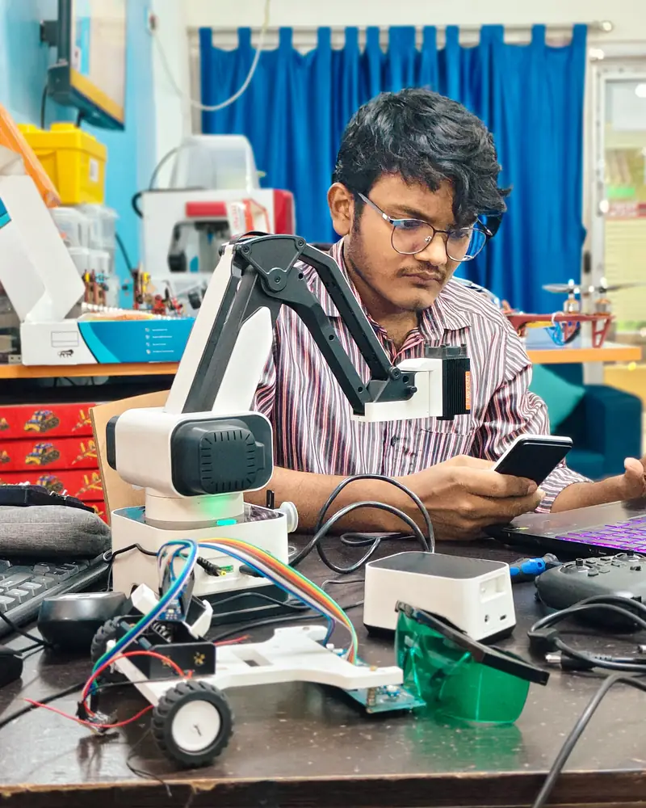
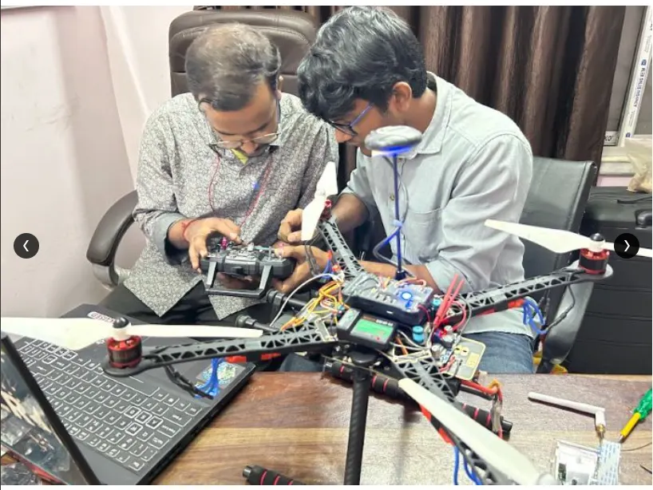
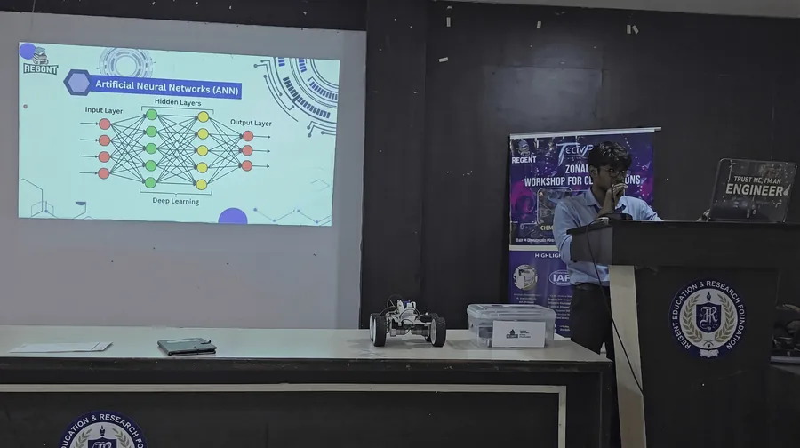
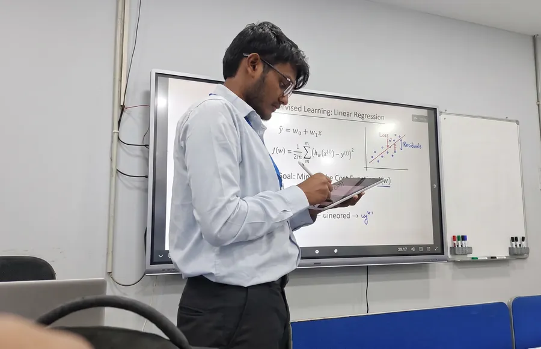

AI Engineer
CurrentViraya SKAI
Building applied AI systems as part of the engineering team.

About
I'm Avishek Mondal, an AI engineer at Viraya SKAI. I build AI systems and connect them to the real world: retrieval pipelines on one side, cameras, motors and microcontrollers on the other.
Before that I built AI-enabled robots and taught robotics and AI at Reboot Robotics Academy. Explaining an idea to a beginner is still the fastest way I know to find out whether I understand it.
Viraya SKAI
Building applied AI systems as part of the engineering team.
Reboot Robotics Academy
Built AI and computer vision into working robots, developed embedded robotics systems, and led the academy's training in both.
Agentic workflows, RAG systems and vector databases, plus computer vision for classification and segmentation.
Robots and IoT devices built on ESP32 and ESP8266 boards, with cameras, motors and sensors.
Indian Institute of Information Technology, Kalyani
Included a flood-modelling and AI-drone team that earned national runner-up recognition.

Taught neural network basics and demonstrated a robot car at a zonal workshop.

Line-following robots, robotics fundamentals and CosmoClench YOLO-based person detection.
